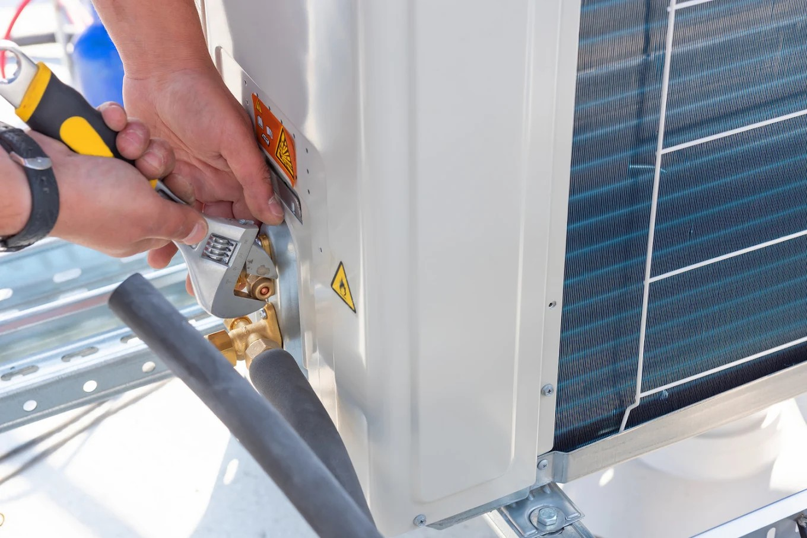

All Service Heating and Conditioning Inc. is the HVAC contractor Islip Terrace NY homeowners rely on when they are ready to move beyond band-aid repairs and address the underlying issues affecting home comfort. With 92 Google reviews averaging 4.2 stars, All Service has built its reputation on comprehensive diagnostics, honest recommendations, and installation quality that shows up in system performance rather than just on paper. The company's technicians carry manufacturer certifications for Rheem, Trane, Carrier, Mitsubishi, and Fujitsu equipment — the full spectrum of systems commonly found throughout Suffolk County's residential housing stock.
Why Does Professional HVAC Installation Make Such a Difference in Islip Terrace Homes?
The gap between a system that was installed and a system that was installed correctly is often invisible until something goes wrong — or until a homeowner's utility bills reveal the hidden cost of poor workmanship. Professional installation begins with a Manual J load calculation that determines the precise heating and cooling capacity required for the specific home, using actual measurements of insulation, window area, orientation, and duct layout rather than rule-of-thumb estimates. Equipment correctly sized to this calculation runs at longer cycles, maintaining more consistent temperatures while removing humidity more effectively during summer. All Service Heating and Conditioning technicians in Islip Terrace perform this calculation for every new system installation — a standard that many contractors skip in the interest of speed, and one that separates genuinely expert HVAC services from the merely adequate.
See why Hauppauge residents choose HVAC contractors from Islip Terrace

How Does Duct System Quality Affect Home Comfort in Islip Terrace?
Ductwork is arguably the most underappreciated component in a forced-air HVAC system, and it is the area where the gap between expert and amateur service is most pronounced. Many Islip Terrace homes have duct systems that were designed for the original home footprint but never updated after additions, attic finishes, or basement conversions added conditioned square footage. Others have significant leakage at connections and joints — industry studies suggest that average duct systems lose 20 to 30 percent of conditioned air before it reaches the living space. Boiler repair Islip Terrace NY and duct remediation are both disciplines All Service Heating and Conditioning masters, using duct blaster testing to quantify leakage before recommending and executing repairs that restore system efficiency. A properly sealed and balanced duct system often improves comfort as dramatically as a full equipment replacement at a fraction of the cost.
What Does a Comprehensive HVAC Tune-Up Actually Include for Long Island Homeowners?
A genuine HVAC tune-up from a qualified contractor covers far more than a filter change and a visual inspection. All Service Heating and Conditioning's seasonal maintenance visits include measurement of static pressure across the air handler, verification of refrigerant charge by weighing (not by gauge estimation), cleaning of evaporator and condenser coils, testing of all safety controls and limit switches, combustion analysis on oil and gas heating equipment, and documentation of findings in a service report the homeowner can reference year over year. For Islip Terrace homes near the water, coil cleaning is particularly important due to salt air accumulation that reduces heat transfer efficiency — a problem that accelerates when maintenance intervals are extended. The result of consistent professional maintenance is a system that runs at its designed efficiency, lasts to or beyond its rated service life, and fails predictably during scheduled service rather than unexpectedly during a heat wave or cold snap.

How Do Expert HVAC Services Improve Energy Efficiency in East Islip and Bay Shore Homes?
Homeowners in East Islip, Bay Shore, and throughout the Islip Terrace service area have consistently found that expert HVAC service translates directly to lower utility bills — not just marginally, but often significantly. A system operating at correct refrigerant charge, with clean coils, proper airflow, and a well-sealed duct system, uses substantially less electricity and fuel than a neglected system working harder to achieve the same comfort outcome. All Service Heating and Conditioning's diagnostic approach identifies the specific deficiencies limiting each system's efficiency — whether that is a refrigerant undercharge reducing cooling capacity by 20 percent, a dirty evaporator coil adding 15 percent to cooling energy consumption, or a cracked heat exchanger causing the furnace to run longer cycles to compensate for heat loss. Oil burner service Islip NY is another area where expert service pays dividends quickly, as a properly tuned oil burner can reduce fuel consumption by 10 to 15 percent compared to one that has gone without annual service.
What Role Does Indoor Air Quality Play in Overall Home Comfort for Islip Terrace Residents?
Indoor air quality is inseparable from genuine home comfort in Islip Terrace, where the combination of coastal humidity, pollen from surrounding natural areas including Heckscher State Park and Bayard Cutting Arboretum, and the tightly sealed construction of modern homes creates an indoor air environment that significantly affects how residents feel day to day. Expert HVAC service addresses air quality through multiple mechanisms: correct equipment sizing that avoids the latent-cooling failures common to oversized systems, properly maintained filtration with MERV ratings appropriate to the household's needs, and where indicated, whole-home dehumidification or air purification equipment that integrates seamlessly with the central system. All Service Heating and Conditioning Inc. evaluates indoor air quality as a standard part of comprehensive HVAC consultations, helping Islip Terrace homeowners understand what their system is and is not doing to protect the air their families breathe.